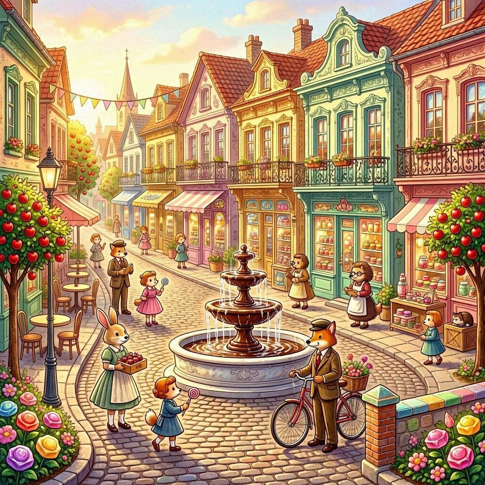
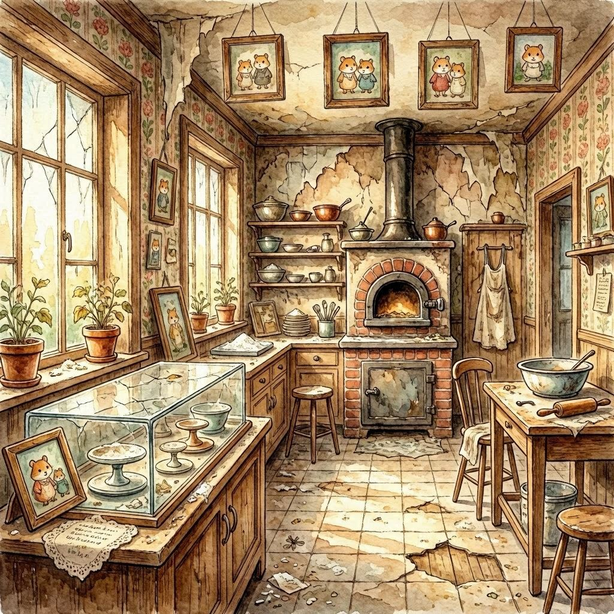
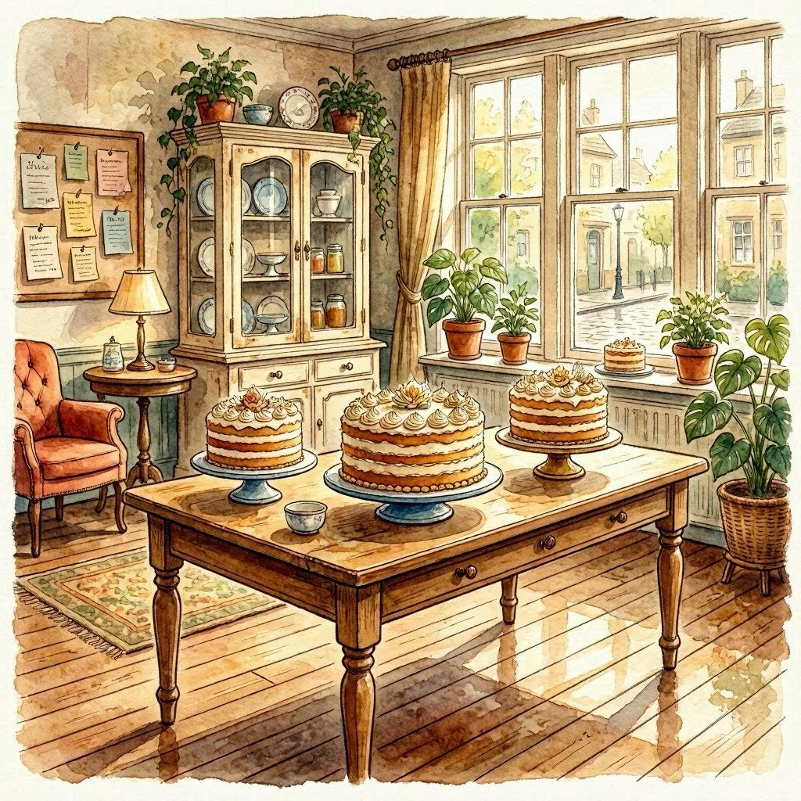

Two hamster best friends race to rebuild their beloved hometown of Sugerville — one recipe at a time — after a devastating rat invasion leaves it in ruins.
Sugerville is a fictional town where every livelihood — every trade, every tradition, every relationship — is rooted in the culinary arts. Its residents are a community of animals for whom pastries and sweets are not a luxury, but a way of life. When the underground rat factions invade without warning, they don't just damage buildings: they fracture the town's economy, its culture, and its sense of safety.
Into this rubble step Henry and Charlie — two hamster chefs, lifelong friends, and Sugerville's most capable culinary minds. They met as students on a school trip, drawn together despite their different backgrounds and training styles, and have been inseparable ever since. Now they return home to do what they do best: cook, restore, and rebuild.
The game begins where the story begins — at Frosted Fantasies, the beloved cake shop run by Charlie's parents, Penelope and Oliver. Working through the wreckage level by level, Henry and Charlie restore the shop piece by piece, unlocking new recipes and helping familiar faces along the way. Word travels fast in a tight community: soon they are recruited — by telephone, newspaper, letter — to take on more restoration projects across town. A pie shop. A boba tea parlour. Each location a new chapter, each renovation a small act of love for the place they call home.
The story deepens as Sugerville inches toward recovery. A traitor surfaces — someone within the community who tipped off the rats. Tension fractures the neighbourhoods that had stood together. The instinct is retaliation. But Henry and Charlie choose a harder path: negotiation. They broker a conversation between Sugerville and the rats, and what begins as a ceasefire slowly becomes something more complex — integration, friction, and ultimately, a reckoning with the long history between these two communities. Why did the rats attack? What does Sugerville represent to those outside its walls? The answers, when they come, are neither simple nor comfortable.
Note: This synopsis represents the current prototype of the narrative. The opening two acts — from the rat invasion through the first wave of shop restorations — are the foundation for all narrative components presented here. The climax and resolution are still in development.
The core loop is a swipe-driven ingredient collector. A hamster sits at the centre of a grid board; players swipe to guide it up, down, left, or right, gathering ingredients until it hits an obstacle or reaches its target. Collected ingredients fill a five-slot tray at the top of the screen, feeding into active customer orders. Completing orders earns coins and bonus moves; matching three or more of the same ingredient triggers rewards scattered across the board.
Obstacles
Solid boxes block all movement. Hollow boxes break with repeated kicks. Water puddles halt the hamster mid-path before it can reach its target.
Mystery squares
Question-mark tiles reveal hidden ingredients when passed. Ingredient shadows telegraph what will appear on the following move — rewarding players who plan ahead.
Power-ups
Shuffle, Row Clear, Column Clear, Clear All, and Pick One give players tactical tools. Most valuable when only a few moves remain.
Order system
Two to three customers appear at once, each with a visible order. Extra ingredients are stored in a basket inventory for use in future orders.
The win condition is always framed as an act of care. Coins collected go directly toward rebuilding a specific location in Sugerville, keeping the player's investment tied to the world rather than abstract numbers. Level completion is celebrated with confetti and applause — reinforcing the communal joy of restoration, not just the satisfaction of a puzzle solved.
Sugerville's story is never told through cutscenes or loading screens. Every narrative beat is delivered through systems that feel native to the world — objects and habits that real communities use to communicate. Each method serves a distinct emotional and structural purpose.

Sugerville is a fictional town drawn from the aesthetic spirit of 1950s Europe — specifically the cobblestone intimacy of Prague, the warm terracotta of Florence, and the gothic whimsy of Edinburgh. The setting is never announced as either fictional or modern; it reveals itself through detail. Candy apples grow on trees. Blenders and espresso machines share counter space with copper bowls and wood-fired ovens. The world earns its strangeness quietly.

Before restoration

After restoration
The first shop Henry and Charlie restore, and the emotional centre of the opening act. Frosted Fantasies is the confectionery of Charlie's parents — Penelope and Oliver — and its interiors carry decades of family life. Plants crowd the windowsills. Family photographs line the walls. Warm, earth-toned rugs soften the floors. The windows look out onto the street, offering glimpses of the wider town: neighbouring shops, the silhouette of the chocolate fountain.
On the walls hang a hand-written menu and clusters of scribbled recipe notes — most legible, some obscured by question marks, hinting at locked recipes yet to be uncovered. A community board near the entrance holds customer messages and thank-you notes, viewable on tap. The baking equipment is intentionally traditional: a mechanical dough sheeter, copper egg white bowls, a marble slab, a spinning cake stand, a hand-cranked sifter, pestle and mortar, a wood-fired oven.
When the narrative begins, none of this warmth is visible. The shop is in ruin — dusty, the windows shattered, the photographs crooked on the walls, the plants wilted, the equipment broken. Restoration is not just a game mechanic; it is the story.
Suggested menu: Classic Chocolate Cake · Matcha Green Tea Cake · Black Forest Gateau · Classic Victoria Sponge · Lemon Drizzle Cake · Red Velvet Cake · Tiramisu Cake · Carrot Cake
Henry and Charlie are designed as narrative and mechanical complements — where one struggles, the other compensates. Their dynamic is the engine of the story: two genuinely different people who happen to be genuinely good friends.
Short and stocky with a round face, dark brown eyes, and hair to match, Henry is impeccably turned out at all times — classic chef's hat perfectly straight, uniform immaculate. He trained in classical pastry arts at the prestigious Petite Pâtisserie Pupils in France, and carries both the credential and the sensibility that comes with it.
He is highly intelligent — brilliantly so — but his intelligence arrives unfiltered. Think Sheldon Cooper with a piping bag: technically correct, socially unaware, and genuinely baffled when others don't follow his reasoning. His vocabulary is precise to the point of requiring translation, and he will use the exact word for something even if no one in the room knows it. Characters frequently ask him to repeat himself.
He is fiercely competitive, deeply confident, and prone to spectacular anxiety when a problem has no clear solution. His arc is one of humility — learning that being right and being helpful are not always the same thing. Despite his polish, he is one of the first to roll up his sleeves and get to work, and his mentorship role in gameplay means he naturally gravitates toward teaching and explaining.
He carries his Baking Portfolio — or Pâtisserie Pages as he insists on calling it — everywhere. It is equal parts reference manual and security blanket.
Taller than Henry, with brownish-green eyes and light brown hair streaked through with purple, Charlie dresses in comfortable, characterful layers — his chef's hat, when he wears one, tilts effortlessly to one side. He studied at the local Sugar Sprinkle Institute, but his real education began earlier: growing up behind the counter of his parents' confectionery shop, watching them experiment with recipes from across the world.
Where Henry leads with logic, Charlie leads with instinct. He is whimsical rather than academic, intuitive rather than precise — and frequently more effective for it. He's a Carpe Diem hamster at heart: relaxed, adaptable, and possessed of a genuine belief that most problems can be solved with a little creativity and a generous measure of sugar. This outlook is contagious. Characters around him tend to feel better.
He is the more socially fluent of the two — quicker to read a room, quicker to defuse it with a well-timed joke (usually a pun). His emotional intelligence fills every gap that Henry's technical intelligence leaves open. He can, however, be underestimated: his jokes and easy manner lead people to overlook how capable he is. He handles this with equanimity. He's used to it.
He is fiercely loyal — to Henry, to his parents, to Sugerville. He solves problems Henry cannot, and he does it without needing to say so.
Sugerville's customers are its community — recurring faces who appear in orders, dialogues, and subplots. Each is designed to embody a facet of the town's life and offer opportunities for micro-narrative as the story develops.
Officer Grayson
Cat · Police25 years old. Gray with white stripes and light green eyes. His expression is habitually serious; his ears poke out above his regulation-issue police hat. No-nonsense on the surface, quietly invested in the people he protects.
Dr. Lucas
Dog · Paediatrician30 years old. A golden retriever with big, soft ears and an instinctively warm face. Green scrubs, white coat, a stethoscope, and a small collection of pins that his young patients have given him over the years.
Miss Ella
Duck · Villager25 years old. A white duck with an orange beak who carries a straw basket of flowers wherever she goes. Her wardrobe — crochet bandana, long skirt, white shirt and vest in soft pastels — looks like it was assembled with care rather than haste.
Ethan Mason
Elephant · Construction27 years old. A gray elephant with pinkish ears and a compact trunk. He wears his high-vis vest and yellow hard hat with the easy confidence of someone who has been on building sites his whole life. Unhurried, reliable.
Oliver Hoot
Owl · City Librarian48 years old. Light and dark brown feathers, round glasses, a long dark coat, and a thick book that never leaves his hands. The oldest named character in the supporting cast — and the one most likely to know Sugerville's history.
Toby Finch
Chick · Student13 years old. Small, round-eyed, and energetically happy. He wears his school uniform — turquoise shorts, short-sleeved shirt, and a small clip-on tie — with a backpack that seems almost as big as he is.
The following is the opening scene of Hamster Dash, set inside the ruins of Frosted Fantasies. It demonstrates the game's primary delivery methods in sequence: sound design, character interaction, thought bubbles, and environmental storytelling. The scene is designed to establish the emotional stakes of the narrative and introduce the characters' dynamic within the first minutes of play.
"Mother! Father!"
"Charlie! You finally arrived. What a relief."
The air is thick with tension. Charlie has rushed into the scene — breathless, eyes scanning the damage. His parents, Penelope and Oliver, wear expressions of deep concern. The shop around them is barely recognisable.
"We came as fast as we could when we got your message. I brought Henry with me."
"Good thinking, Charlie. We need all the help we can get right now."
Henry steps forward, his gaze moving steadily across the damage — taking inventory, processing.
"Can someone give me a full account of what happened here?"
"It was the Rats. They attacked without warning."
"They swept through every bakery, every confectionery — everywhere. Sugerville is in complete disarray."
The weight of it lands on Charlie. His eyes settle on the broken display case, the wilting plants, the family photographs hanging crooked on the walls.
"Even our shop?"
"Afraid so. Frosted Fantasies wasn't spared."
A beat. Henry watches Charlie process it. Then:
"Hey. Look at me. This is not the end — this is a problem, and we are very good at solving problems. We were trained for exactly this."
Something shifts in Charlie. The heaviness doesn't leave, but resolve settles over it.
"You're right. Mum, Dad — you'll be working in your shop again. I promise."
"Then let's get started. We rebuild from here."